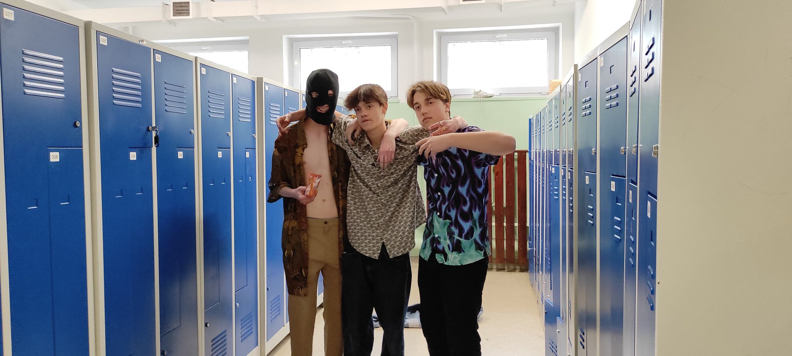

O stronie:
Strona została stworzona przez tajemniczego fana Rudego. Jest to kopia innej strony, tylko przerobiona. Jeżeli chcesz zostać dodany na ścianę chwały napisz na mojego maila: fanrudego2137@gmail.com pamiętaj że musisz wysłać swoje zdjęcie.
